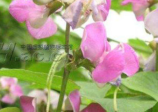

Specie: Lablab purpureus
Taxonomy: Fabaceae; Papilionoideae; 50 kb inversion clade; NPAAA clade; indigoferoid/millettioid clade; Phaseoleae; Lablab
Abbr: Lpu
Level: Scaffold
chromosome number: 2n=2X=22

Introduction: Lablab purpureus is a species of bean in the family Fabaceae. It is native to Africa and it is cultivated throughout the tropics for food. English language common names include hyacinth bean, lablab-bean bonavist bean/pea, dolichos bean, seim or sem bean, lablab bean, Egyptian kidney bean, Indian bean, bataw and Australian pea. It is the only species in the monotypic genus Lablab. The plant is variable due to extensive breeding in cultivation, but in general, they are annual or short-lived perennial vines. The wild species is perennial. The thick stems can reach 6 m (20 ft) in length. The leaves are made up of three pointed leaflets, each up to 15 cm (5.9 in) long. They may be hairy on the undersides. The inflorescence is made up of racemes of many flowers. Some cultivars have white flowers, and others may have purplish or blue. The fruit is a legume pod variable in shape, size, and color. It is usually several centimeters long and bright purple to pale green. It contains up to four seeds. The seeds are white, brown, red, or black depending on the cultivar, sometimes with a white hilum. Wild plants have mottled seeds. The seed is about a centimeter long.
Distribution: Angola, Benin, Botswana, Cameroon, Cape Provinces, Cape Verde, Central African Repu, Eritrea, Ethiopia, Free State, Gabon, Gambia, Ghana, India, Ivory Coast, Kenya, KwaZulu-Natal, Madagascar, Malawi, Mozambique, Namibia, Nigeria, Northern Provinces, Rwanda, Senegal, Sierra Leone, Sudan, Swaziland, Tanzania, Togo, Uganda, Zambia, Zaïre, Zimbabwe
Article Title: The draft genomes of five agriculturally important African orphan crops
Data source: The raw data from our genome project was deposited in the NCBI Sequence Read Archive database with Bioproject IDs PRJNA453822 and PRJNA474418. Assembly and annotation of the five genomes and other supporting data, including BUSCO results, are available in the GigaDB repository , and the data reported in this study are also available in the CNGB Nucleotide Sequence Archive (CNSA: https://db.cngb.org/cnsa; accession number CNP0000096). All genome annotations described here are also available at http://bioinformatics.psb.ugent.be/orcae/AOCC.